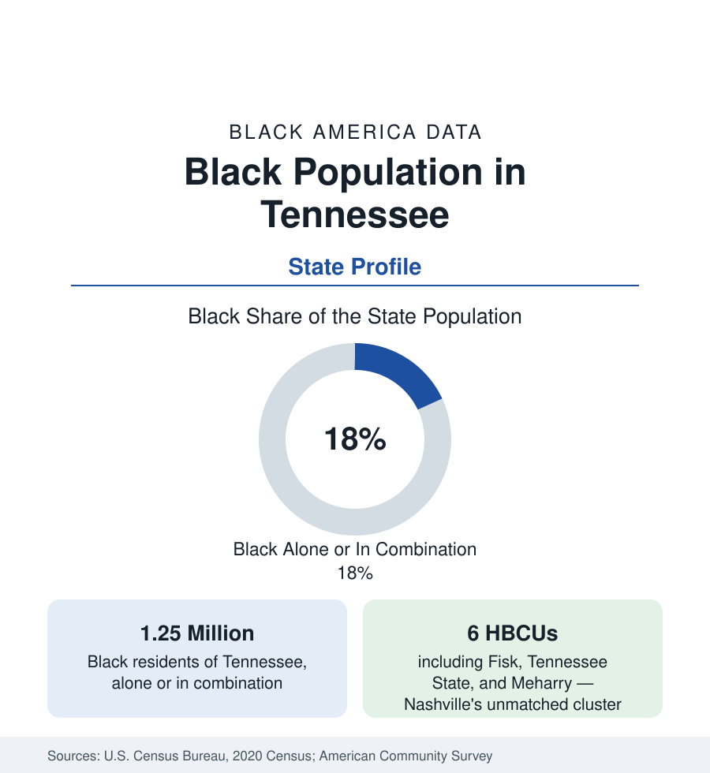

Black Census
Black Population in Tennessee: Memphis, Nashville, and the River
About 1.25 million Black Tennesseans — nearly one in five residents — across Memphis, Nashville's HBCU row, and the state's river cities. The census profile.

Tennessee holds about 1.25 million Black residents — Black alone or in combination — nearly one in five of its people, with Black alone at about 1.13 million, or 16 percent. The state's Black population has two capitals: Memphis, profiled in the cities section, the South's great Black-majority city on its western river edge; and Nashville, the state capital, whose cluster of Black institutions — Fisk University, Meharry Medical College, Tennessee State — is unmatched by any city its size in the nation. Between them runs a Black geography of river towns, tobacco and cotton counties, and two smaller metros. This article profiles the state population.
Memphis and the West
West Tennessee holds the state's Black center of gravity. Memphis and Shelby County — where Black residents are close to half the county population — dominate, surrounded by the cotton counties of the Tennessee Delta fringe: Lauderdale, Tipton, Haywood, Fayette, and Hardeman, where Black shares run from a quarter to near half, in a plantation-era demography continuous with the Mississippi Delta across the state line. Jackson, the region's hub city, is more than two-fifths Black. The west is the state's oldest Black geography, its population rooted in the cotton economy and its institutions — LeMoyne-Owen College in Memphis among them — founded in the emancipation generation.
Nashville: The Institution City
Nashville's Black population — about a quarter of the consolidated city-county — is distinguished less by its size than by what it built. Fisk University, founded in 1866 and home of the Jubilee Singers who carried spirituals to the world; Meharry Medical College, founded in 1876 and for generations the training ground of a very large share of the nation's Black physicians and dentists; Tennessee State University, the public land-grant HBCU; and American Baptist College form a cluster within a mile of one another — four Black institutions of national significance in one neighborhood, a concentration no other American city replicates. The North Nashville community around them, historically the center of Black Nashville, carries the marks of the highway era — the interstate driven through its commercial heart — and of the recent boom's gentrification pressure, visible in the tract data as one of the South's sharpest neighborhood turnovers.
The East: Knoxville and Chattanooga
East Tennessee's Black populations are smaller in share and older in their constraints — mountain geography limited plantation agriculture, and the region's Black communities formed in the railroad and industrial towns. Chattanooga, on the Georgia line, is roughly a third Black, built on its foundry and rail economy, with a Black community centered in the city's east side and the Martin Luther King district downtown. Knoxville is roughly a sixth Black, anchored by Knoxville College, a small historic HBCU, and the University of Tennessee's enrollment. The Tri-Cities of the northeast record the state's smallest Black shares, in the low single digits — the other end of a state distribution that runs from Memphis's near-half to the mountains' few percent.
Composition and Change
Tennessee's Black population grows on the state's two metro engines: Nashville's boom draws Black professionals and families in the return-migration current, and the Memphis metro grows slowly on its logistics economy, while the rural west loses population with its region. The state's Black indicators — income near the Southern pattern, attainment lifted by the Nashville institutions, health outcomes at the difficult end of the public health tables — describe a population whose institutional capital is disproportionate to its size, concentrated in two cities, against a rural base in demographic decline.
Reading the Tennessee Numbers
The Clarksville metro, northwest of Nashville on the Kentucky line and powered by the Fort Campbell military economy, adds one of the state's faster-growing Black populations — roughly a fifth of a booming metro — its composition shaped by military families in the pattern the employment section records for bases across the South.
Tennessee's profile is the argument that Black institutional history clusters: the state's 18 percent contains both the South's largest Black-majority metropolis and its densest HBCU neighborhood, and the counties between them record the quieter data of the river counties. Read the state through its two capitals — one demographic, one institutional — and the county tables between.
More in Black Census
The Black Population of the United States: Size, Definitions, and Distribution
The Black population of the United States totals 52.8 million — 15.4 percent of the nation. How the Census Bureau defines and counts the population, and where it lives.
Black Median Household Income in the United States
Black median household income stands at $56,490 in the Census Bureau's annual income report — how the figure is measured, how it compares, and what drives it.
The Black Poverty Rate: Levels, Children, and the Long Trend
The official Black poverty rate is 17.1 percent — against 11.1 percent nationally and 7.7 percent for non-Hispanic White Americans. How poverty is measured and what the data show.
Source: U.S. Census Bureau, 2020 Census; American Community Survey; Population Estimates Program.